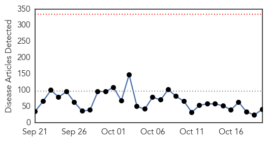
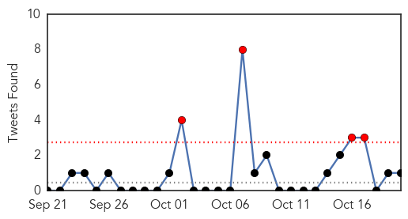
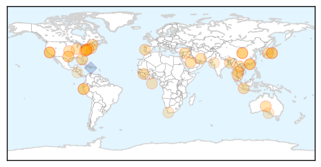
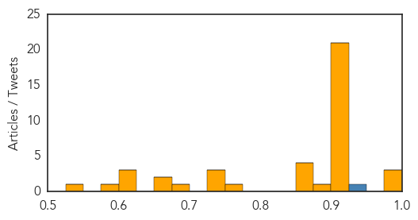

Toggle navigation
Early Warning
Daily Alerts
Unknown
Oct 20, 2014
Compare to:
-
Dengue Fever
Hemmorhagic Fever
Mold/Fungal Infection
Influenza
Meningitis
Pertussis / Whooping Cough
Middle East Respiratory Syndrome
Cholera
Hepatitis
Chikungunya
Yellow Fever
Bubonic Plague
West Nile Virus
Swine Flu
Ebola
Measles
Mumps
30 Day Trends
Web: 0
alerts
, 0
warnings
Twitter: 4
alerts
, 0
warnings
Top Articles:
0.998
Health: MERS virus causes first fatality in Turkey
0.990
CDC Studies Effects of Nasal Spray Flu Vaccine Over Traditional Shot for Children
0.985
Tori Spelling in quarantine at Cedars Sinai Hospital and doctors suspect ENTEROVIRUS
0.920
Some flu vaccine orders still delayed
0.917
Chicago Tribune
0.917
Chicago Tribune
0.917
Chicago Tribune
0.917
Chicago Tribune
0.917
Chicago Tribune
0.917
Chicago Tribune
0.917
Chicago Tribune
0.917
Chicago Tribune
0.917
Chicago Tribune
0.917
Chicago Tribune
0.917
Chicago Tribune
0.917
Chicago Tribune
0.917
Chicago Tribune
0.917
Chicago Tribune
0.917
Chicago Tribune
0.913
Doctor Stresses Expectant Mothers To Get Annual Flu Shot
0.910
The world windows to Thailand
0.910
The world windows to Thailand
0.910
The world windows to Thailand
0.910
The world windows to Thailand
0.888
Mt. Blue Regional School District plans free flu vaccine clinics
0.866
A student walks near a 'algarrobo' tree with more than 500 years old at the dry forest of the Pomac Natural Reserve in Peru's northern region of Lambayeque
0.866
'Cholita' a Spectacled bear rest in a tree at the dry forest of the Chaparri Natural Reserve in Peru's northern region of Lambayeque
0.866
Bus accident kills 20 in Bangladesh, leaves 30 injured
0.866
Turkey says facilitating Iraqi Kurdish fighters' passage to Kobani
0.758
Health professionals encourage patients to ask questions
0.747
Changing how primary-care doctors treat pain, fatigue and other common symptoms
0.737
Pork producers enjoy high profits while continuing to battle viral epidemic
0.732
Expert: Threat of Lyme disease increasing along with tick population
0.691
Scientists trace earliest history of HIV
0.663
In South Africa, this is the disease that demands our attention
0.660
Whole exome sequencing can assist in early diagnosis of various disorders
0.624
105 people taken ill after wedding feast
0.614
Wayne, NJ Dentist, Dr. Laurence Breiterman Encourages Healthier Gums this Month, and Educates People on a Less Invasive Gum Disease Treatment Option
0.611
Being encouraged into health careers
0.584
Enterovirus-D68: Yonkers student diagnosed with EV-D68
0.542
Thousands Affected by Heavy Rains in Nicaragua
Top Tweets:
0.931
Quiconque provenant de la Guinée du Liberia Sierra Leone sera autorisées à rentrer en Haiti 28 jours après date de sortie de ces pays.
Web/News Articles

Tweets

Article Locations

Article Confidences
